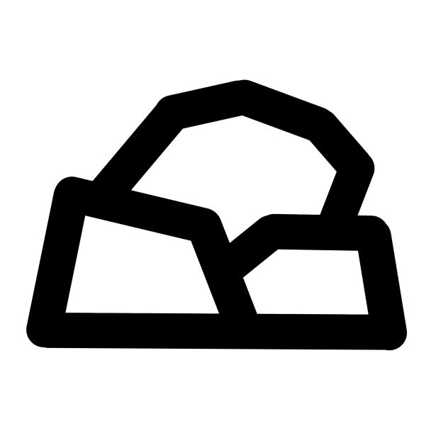

A friendly and powerful OS for everyone
Why use MiracleOS?
User First Model
We strive for a good user experience with MiracleOS working out of the box.
Gaming
Play Steam games with Valve's Proton compatibility layer for Linux.
Big App Selection
MiracleOS offers 21 496 packages, and provides compatibility for Windows and MacOS apps.

Rock Solid Stability
MiracleOS provides rock solid stability for everyone.
System Requirements
| System Requirements | Minimum | Recommended |
|---|---|---|
| CPU | 2 GHz 64 bit CPU | 3 GHz 64 bit CPU |
| Space | 20 GB | 100 GB or more |
| GPU | Any GPU made after 2000 and supported by Linux | A Vulkan Capable GPU |
| Boot type | BIOS | UEFI |
| RAM | 2 GB | 8 GB |